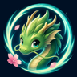
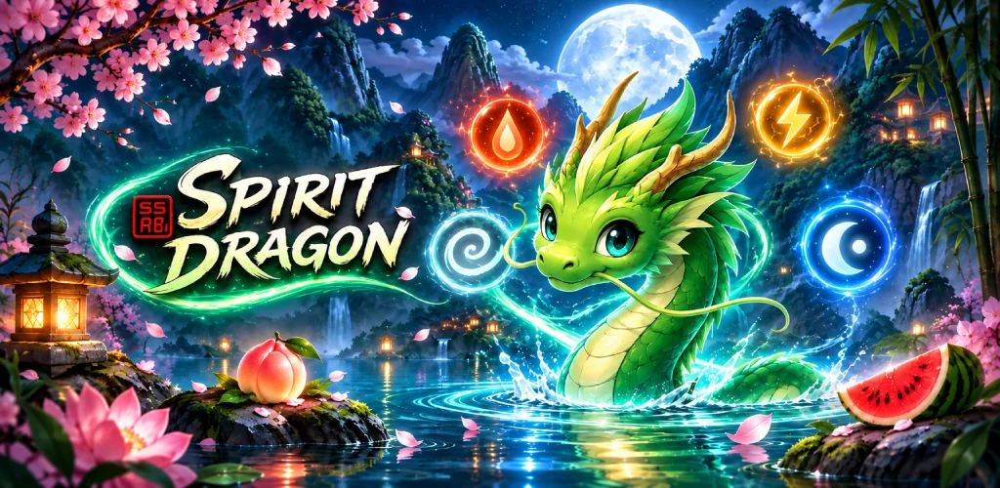
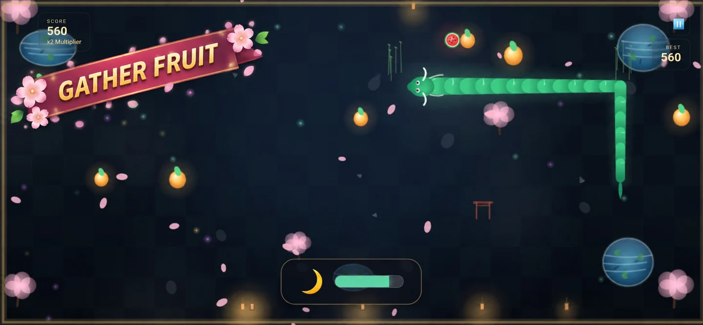
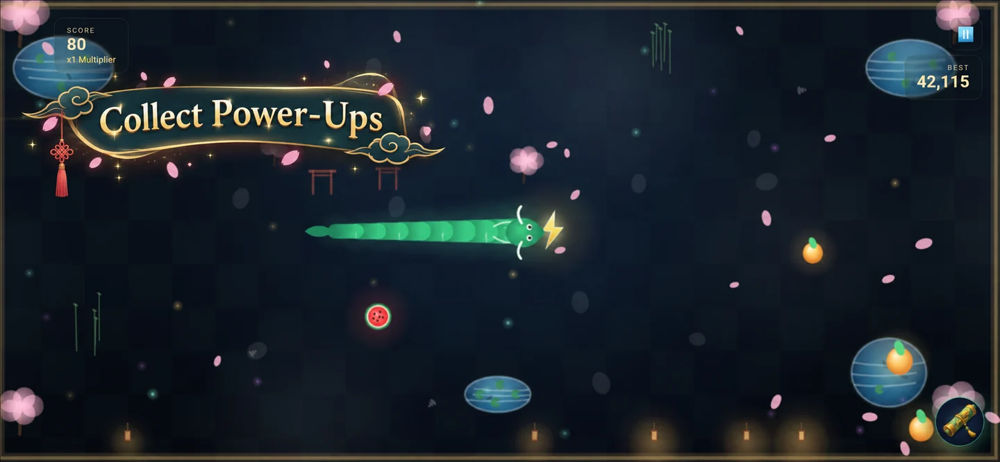
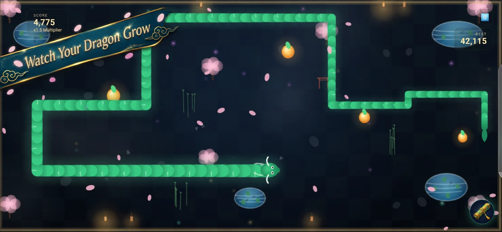
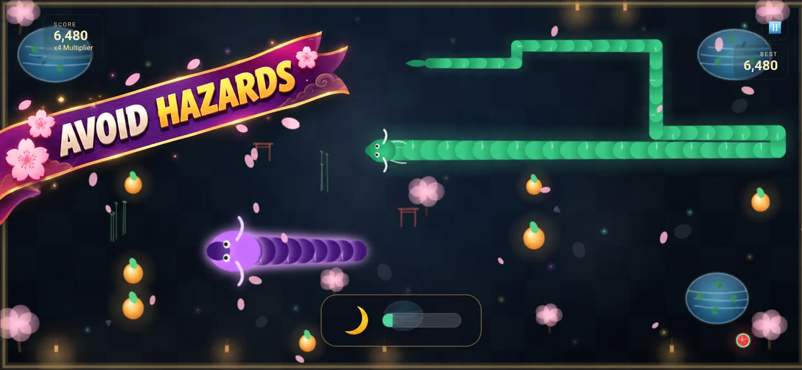
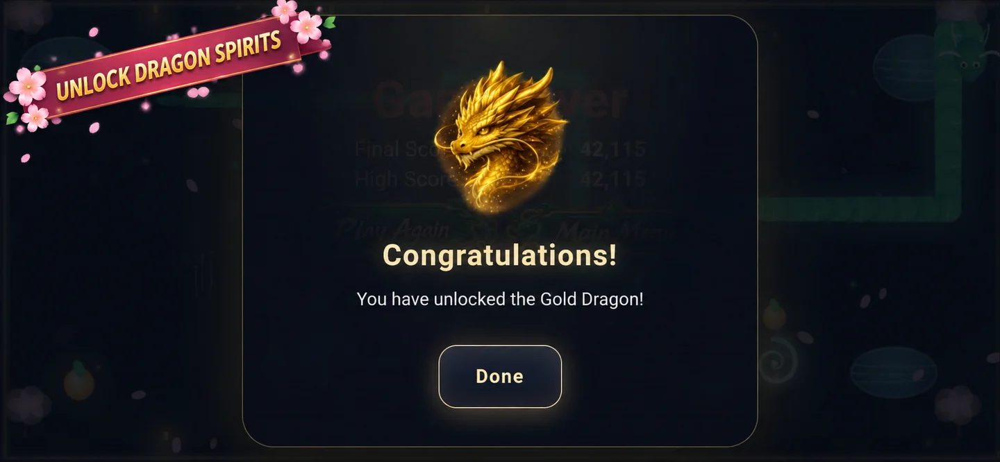
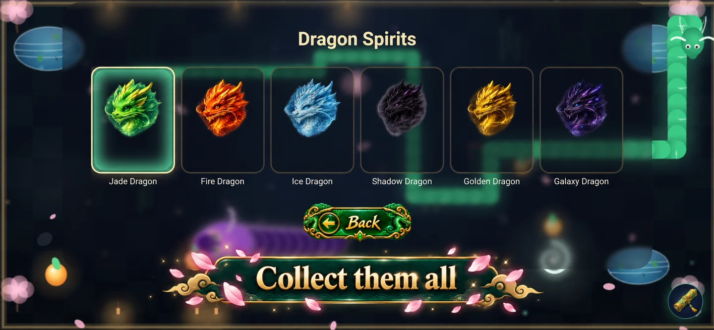

Choose your pace.
Easy gives you a wider pickup range. Normal asks you to enter each pickup’s cell. Each mode remembers its own best score and dragon selection.

Spirit DragonBY MINNYMEDIAA SNAKE-INSPIRED ARCADE ADVENTURE
Guide your dragon through a moonlit garden. Gather fruit, harness elemental spirits, and keep growing—without getting in your own way.

SIMPLE TO BEGIN. ROOM TO MASTER.
Every fruit makes you longer. Every turn needs a little more care. Chase a better score through a garden of drifting petals, glowing ponds and unexpected company.
Easy gives you a wider pickup range. Normal asks you to enter each pickup’s cell. Each mode remembers its own best score and dragon selection.
Fire Spirit turns a self-collision into a life-saving cut. Wind gathers fruit, Lightning adds speed, and Moon Pearl boosts fruit scores.
Chain fruit into combos and build permanent score multipliers with successful Fire Spirit cuts. Avoid walls, your own body and the roaming Galaxy Dragon.
SIX SPIRITS. YOUR COLLECTION.
Begin with Jade and unlock new dragon spirits as your score grows. Each brings its own artwork and themed menus. Normal unlocks also become available in Easy.
A LOOK INSIDE
Official gameplay and collection screenshots with promotional captions. Select a screenshot to take a closer look.

A growing dragon. A score worth chasing.

Four power-ups to change the course of a run.

The longer you grow, the tighter the challenge.

Keep an eye out for the Galaxy Dragon.

Earn new dragon spirits as your best score climbs.

Six dragons. Six distinctive themes.
MORE TO DISCOVER
Work towards 38 Google Play Games achievements and compete on four leaderboards: Easy, Normal, and a separate Ancient Rites board for each difficulty.
Reach 50,000 points to uncover Ancient Rites—an Easter egg that lets you experiment with world size, dragon speed, power-up settings and more. Modified runs have their own leaderboards.
Google Play Games features require sign-in. The game includes advertisements and an optional rewarded-ad revive.
ANCIENT RITESA different kind of playground.
DEVELOPER & SUPPORT
Have a question, found a bug, or want to share feedback about Spirit Dragon? Get in touch with the developer.